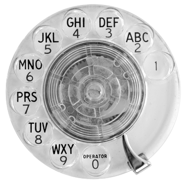

|
dial.das digitale ilse aichinger literaturverzeichnis |
{{ searchResult.pagination.total }} Einträge
| Titel | erschienen in | Datum | Wikidata-ID |
|---|---|---|---|
|
{{ item.title }} {{ item.subtitle }}
{{ item.title }} {{ item.author.join(' & ') }} {{ item.author.join('') }} |
{{ item.journaltitle }}, {{ item.booktitle }}, {{item.maintitle}}, {{ item.publisher.join(' & ') }}: {{ item.publisher.join('') }}: {{ item.location.join(' & ') }}, {{ item.location.join('') }}, S. {{ item.pages }} {{ item.url }} |
{{ item.date }} | {{ item.wikidata }} |